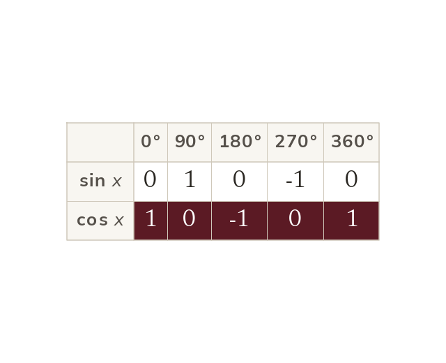
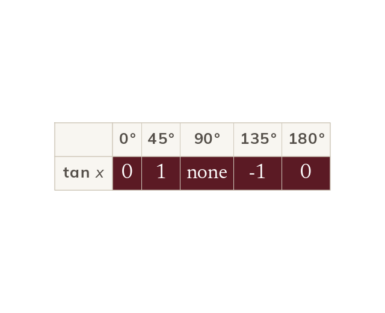
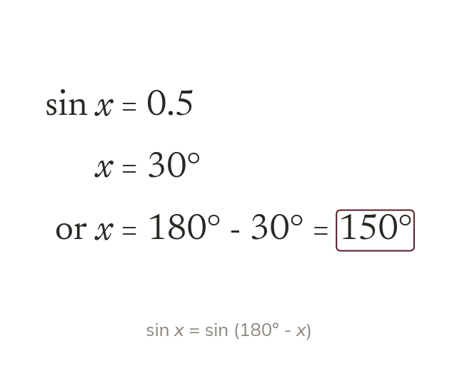
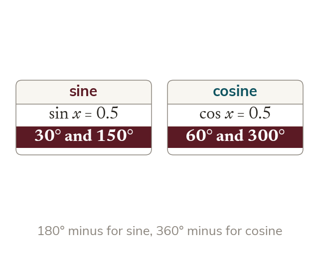

Sine and cosine are waves
Both graphs repeat every 360°, between -1 and 1. Sine starts at 0, but cosine starts at 1.
Sine, cosine and tangent work for any angle, not just those in a right-angled triangle. Today we sketch their graphs and use them to find every solution of an equation.
Work down the page at your own pace. Write every answer in your book first, then click to check it.
Read each card, then follow the worked examples one step at a time.

Both graphs repeat every 360°, between -1 and 1. Sine starts at 0, but cosine starts at 1.

The tangent graph repeats every 180°. At 90° and 270° it has no value, so the graph has asymptotes there.
Pick an answer. If it's wrong, the feedback tells you which mistake it was.
Read each card, then follow the worked examples one step at a time.

The calculator gives one solution. The graph's symmetry gives the other: 180° minus the first.

For cosine, the second solution is 360° minus the first.
Pick an answer. If it's wrong, the feedback tells you which mistake it was.
Finished? Next lesson: 11H.2.2 The Sine Rule for Lengths.
Log in, then search for a code to practise that skill.
Videos, worksheets and more on each part of this lesson.